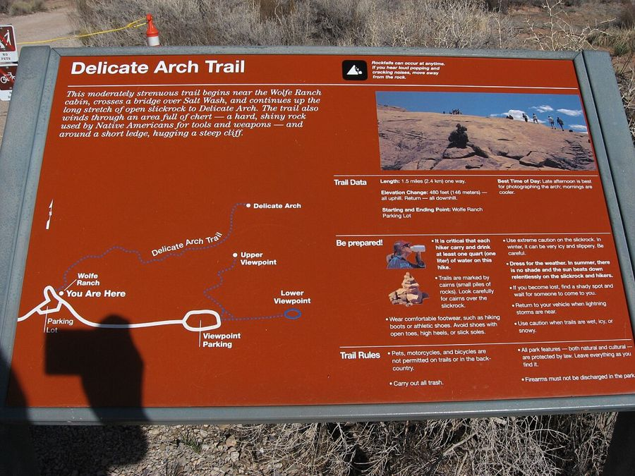
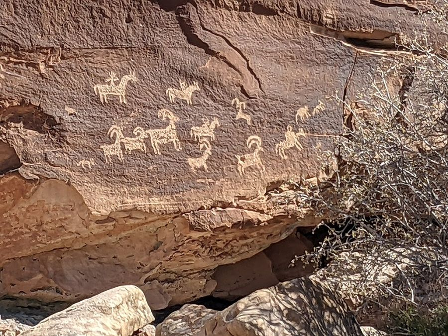
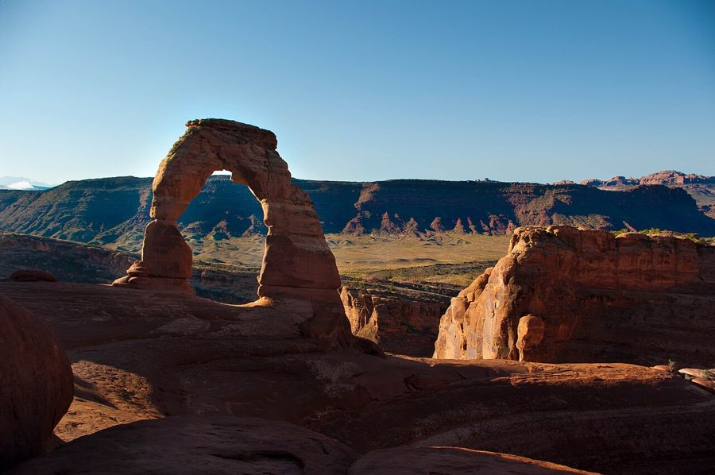

The route starts here, near Wolfe Ranch. The trail crosses a bridge, then climbs slickrock to the arch.
Photo: Ken Lund from Reno, Nevada, USA · CC BY-SA 2.0 · Wikimedia Commons

A short spur off the trail leads to a wall of Ute rock art, early in the walk.
Photo: bobistraveling · CC BY 2.0 · Wikimedia Commons

You have reached Delicate Arch, a free-standing arch on the edge of a slickrock bowl.
Photo: Cal Wolfe · CC BY-SA 3.0 · Wikimedia Commons